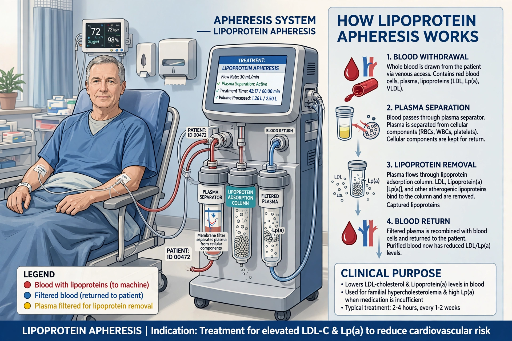

Lipoprotein apheresis is a medical procedure, similar in concept to dialysis, in which blood is passed through an extracorporeal device that selectively removes low-density lipoprotein (LDL) cholesterol and lipoprotein(a) before the blood is returned to the body.

Lipoprotein apheresisIt is reserved for severe lipid disorders — homozygous familial hypercholesterolaemia, heterozygous FH with progressive cardiovascular disease, and markedly raised lipoprotein(a) — when diet and drugs such as statins, ezetimibe and PCSK9 inhibitors are insufficient.
Blood is anticoagulated and plasma separated; LDL is removed by adsorption, precipitation or filtration. A single session can lower LDL by 60–70%, though levels rebound, so treatments repeat every one to two weeks.
Long-term treatment can regress xanthomas and slow atherosclerosis, but it is time-consuming and available only at specialist centres.